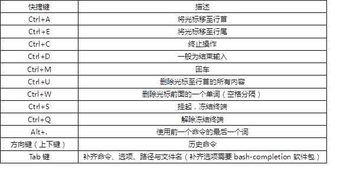

本案例要求熟悉Linux Shell环境的特点，主要练习以下操作：
实现此案例需要按照如下步骤进行。
步骤一：切换用户的Shell环境
什么是shell？
Shell是在Linux内核与用户之间的解释器程序，通常指的是bash，负责向内核翻译及传达用户/程序指令，如图-1所示。
图-1
shell的使用方式：
1.交互执行指令：人工干预，执行效率底。
2.非交互执行指令：安静地在后台执行，执行效率高，方便写脚本。
若需要临时使用另一种Shell环境，可以直接执行对应的Shell解释器程序，比如只要执行ksh可以切换到ksh命令行环境。
- [root@svr5 ~]# yum -y install ksh //若缺少ksh请先安装ksh包
- .. ..
- [root@svr5 ~]# cat /etc/shells
- /bin/sh
- /bin/bash
- /sbin/nologin
- /bin/tcsh
- /bin/csh
- /bin/ksh //确认当前系统已识别ksh
- [root@svr5 ~]# ksh //进入ksh环境
- [root@svr5]~# exit //返回到切换前的bash环境
若希望修改用户的登录Shell，管理员可以直接通过usermod（或useradd）命令设置。比如，以下操作可将用户zhangsan的登录Shell改为/bin/ksh：
- [root@svr5 ~]# usermod -s /bin/ksh zhangsan //执行修改操作
- [root@svr5 ~]# grep 'zhangsan' /etc/passwd
- zhangsan:x:516:516::/home/zhangsan:/bin/ksh //修改后
步骤二：快捷键与Tab键补齐，常见快捷键如表-1所示
表-1
步骤三：练习命令历史
1）检查历史命令的容量。
默认记录1000条，通过全局变量HISTSIZE设置，对所有用户有效：
- [root@svr5 ~]# grep HISTSIZE /etc/profile
- HISTSIZE=1000
查看已为当前用户记录的历史命令条数：
- [root@svr5 ~]# history | wc -l
- 1000
2）查看历史命令列表。
列出最近执行的10条历史命令：
- [root@svr5 ~]# history | tail
- 1028 grep 'zhangsan' /etc/passwd
- 1029 cat /etc/redhat-release
- 1030 usermod -s /bin/tcsh zhangsan
- 1031 grep 'zhangsan' /etc/passwd
- 1032 su - zhangsan
- 1033 echo 1234567 | passwd --stdin zhangsan
- 1034 su - zhangsan
- 1035 grep HISTSIZE /etc/profile
- 1036 history | wc -l
- 1037 history | tail
3）调用指定的历史命令。
重新执行历史命令列表中的第1028条操作：
- [root@svr5 ~]# !1028
- grep 'zhangsan' /etc/passwd
- zhangsan:x:516:516::/home/zhangsan:/bin/bash
重新执行最近一次以cat开头（根据实际情况变更）的历史命令操作：
- [root@svr5 ~]# !cat
- cat /etc/redhat-release
- Red Hat Enterprise Linux Server… …
4）清空历史的命令。
- [root@svr5 ~]# history -c //清空自己的历史命令
- [root@svr5 ~]# > ~/.bash_history //清空记录文件
- [root@svr5 ~]# history //再次检查历史命令列表
- 42 > ~/.bash_history
- 43 history
步骤四：练习命令别名
1）查看已经定义的命令别名列表。
当前的别名列表：
- [root@svr5 ~]# alias
- alias cp='cp -i'
- alias l.='ls -d .* --color=tty'
- alias ll='ls -l --color=tty'
- … …
别名设置一般存放在用户的.bashrc文件内：
- [root@svr5 ~]# grep '^alias' ~/.bashrc
- alias rm='rm -i'
- alias cp='cp -i'
- alias mv='mv -i'
2）自定义新的命令别名
添加一个名为lh的命令别名，实际执行的是“ls -lh”：
- [root@svr5 ~]# alias lh='ls -lh' //定义别名命令lh
- [root@svr5 ~]# alias lh //确认定义结果
- alias lh='ls -lh'
验证别名命令的效果：
- [root@svr5 ~]# lh /etc/fstab //使用别名
- -rw-r--r-- 1 root root 733 10-09 15:34 /etc/fstab
- [root@svr5 ~]# ls -lh /etc/fstab //使用完整的命令
- -rw-r--r-- 1 root root 733 10-09 15:34 /etc/fstab
3）取消别名
取消单个别名：
- [root@svr5 ~]# unalias lh //取消名为lh的命令别名
- [root@svr5 ~]# alias lh //查询时已没有lh
- -bash: alias: lh: not found
步骤四：重定向标准输入/输出/错误输出
标准输入（stdin），描述号为0；
标准输出（stdout），描述号为1；
标准错误（stderr），描述号为2。
1）重定向标准输出。
使用 > 将命令执行的正常输出重定向到文件：
- [root@svr5 ~]# ls -ld /etc/ //正常应输出到屏幕
- drwxr-xr-x. 140 root root 8192 8月 2 04:45 /etc/
- [root@svr5 ~]# ls -ld /etc/ > stdout.txt //重定向到文件
- [root@svr5 ~]# cat stdout.txt //确认重定向输出的结果
- drwxr-xr-x. 140 root root 8192 8月 2 04:45 /etc/
> 操作会覆盖目标文件（先清空、再写入）：
- [root@svr5 ~]# echo "I am the king." > stdout.txt //覆盖目标文件
- [root@svr5 ~]# cat stdout.txt //确认结果
- I am the king.
改用 >> 可实现追加重定向输出：
- [root@svr5 ~]# ls -ld /etc/ >> stdout.txt //追加输出
- [root@svr5 ~]# cat stdout.txt
- I am the king. //原有内容还保留
- drwxr-xr-x. 140 root root 8192 8月 2 04:45 /etc/
2）重定向标准错误。
对于命令执行出错的信息，使用 > 无法保存，仍然会输出到屏幕。比如，可使用ls命令同时查看两个对象（其中nb.txt并不存在），重定向输出：
- [root@svr5 ~]# ls -l nb.txt /etc/fstab > stderr.txt
- [root@svr5 ~]# cat stderr.txt //正常信息成功重定向到目标文件
- -rw-r--r--. 1 root root 541 1月 5 2017 /etc/fstab
使用 2> 可重定向错误信息，比如，可执行一个错误的命令：
- [root@svr5 ~]# ls -l nb.txt /etc/fstab 2> stderr.txt
- -rw-r--r--. 1 root root 541 1月 5 2017 /etc/fstab
- //正确的信息默认输出至屏幕，错误信息重定向到目标文件
- [root@svr5 ~]# cat stderr.txt //从文件中查看出错信息
- ls: nb.txt: 没有那个文件或目录
类似的，2>> 可实现追加输出：
- [root@svr5 ~]# ls tmpfile 2>> stderr.txt
- [root@svr5 ~]# cat stderr.txt
- ls: nb.txt: 没有那个文件或目录
- ls: tmpfile: 没有那个文件或目录
若希望将正常输出、错误输出重定向同一个文件，可使用 &> :
- [root@svr5 ~]# ls -l nb.txt /etc/fstab &> stderr.txt
- [root@svr5 ~]# cat stderr.txt
- ls: nb.txt: 没有那个文件或目录
- -rw-r--r--. 1 root root 541 1月 5 2017 /etc/fstab
3）重定向标准输入。
- [root@svr5 ~]# mail -s Error root < /etc/passwd
4）案例
- [root@svr5 ~]# cat /root/test.sh
- #!/bin/bash
- for i in {1..10}
- do
- useradd user$i 2>>/root/user.log
- echo '123456' | passwd --stdin user$i >/dev/null
- done
步骤五：管道操作实践
借助于管道符“|”，可以将一条命令的标准输出交给另一条命令处理，在一条命令行内可依次使用多个管道。
1）统计/etc/目录下资料的数量。
- [root@svr5 ~]# ls -l /etc | wc -l
- 254
2）列出Yum库里名称中含cluster的软件包。
- [root@svr5 ~]# yum list | grep cluster
- cluster-cim.x86_64 0.12.1-7.el5 RHEL5-Cluster
- cluster-snmp.x86_64 0.12.1-7.el5 RHEL5-Cluster
- … …
本案例要求编写三个脚本程序，分别实现以下目标：
一个规范的Shell脚本构成包括：
实现此案例需要按照如下步骤进行。
步骤一：编写第一个Shell脚本，输出“Hello World”
1）根据手动任务操作编写脚本文件
- [root@svr5 ~]# vim /root/first.sh
- #!/bin/bash
- echo 'Hello World'
- exit
- [root@svr5 ~]# chmod +x /root/first.sh //添加可执行权限
2）执行脚本，测试效果
- [root@svr5 ~]# /root/first.sh
- Hello World
3）Shell脚本的执行方式：
方法一，作为“命令字”：指定脚本文件的路径，前提是有 x 权限
- [root@svr5 ~]# ./first.sh //指定相对路径
- [root@svr5 ~]# /root/first.sh //指定绝对路径
方法二，作为“参数”：使用bash、sh、source来加载脚本文件
- [root@svr5 ~]# bash first.sh //开启子进程
- [root@svr5 ~]# sh first.sh //开启子进程
- [root@svr5 ~]# source first.sh //不开启子进程
步骤二：编写为本机快速配Yum仓库的Shell脚本
1）Yum仓库配置文件的参考内容如下：
- [root@svr5 ~]# cat /etc/yum.repos.d/rhel.repo
- [rhel]
- name=redhat
- baseurl=file:///misc/cd //yum源不一样，不能直接抄！！！
- enabled=1
- gpgcheck=0
2）根据参考文件的内容，编写脚本内容如下：
- [root@svr5 ~]# vim /root/yum.sh
- #!/bin/bash
- rm -rf /etc/yum.repos.d/*.repo
- echo '[rhel]
- name=redhat
- baseurl=file:///misc/cd
- gpgcheck=0
- ' > /etc/yum.repos.d/rhel.repo
- [root@svr5 ~]# chmod +x /root/yum.sh //添加可执行权限
3）执行脚本，测试效果
执行配置Yum仓库的脚本：
- [root@svr5 ~]# /root/yum.sh
检查配置结果：
- [root@svr5 ~]# ls /etc/yum.repos.d/* //仓库配置已建立
- /etc/yum.repos.d/rhel.repo
- [root@svr5 ~]# yum repolist //Yum仓库已可用
- rhel-packages | 3.9 kB 00:00 ...
- rhel-packages/primary_db | 3.1 MB 00:00 ...
- repo id repo name status
- rhel redhat 3,690
- repolist: 3,690
步骤三：编写快速装配vsftpd服务的Shell脚本
1）编写参考脚本文件如下：
- [root@svr5 ~]# vim /root/ftpon.sh
- #!/bin/bash
- yum -y install vsftpd &> /dev/null
- systemctl start vsftpd
- systemctl enable vsftpd
- cp /etc/hosts /var/ftp/pub
- #拷贝一个文件，放到FTP共享目录下
- [root@svr5 ~]# chmod +x /root/ftpon.sh //添加可执行权限
3）执行脚本，测试效果
执行快速装配vsftpd服务的脚本：
- [root@svr5 ~]# /root/ftpon.sh
确认脚本执行结果：
- [root@svr5 ~]# rpm -q vsftpd
- vsftpd-3.0.2-10.el7.x86_64
- [root@svr5 ~]# systemctl status vsftpd
本案例要求熟悉Shell变量的使用，主要练习或验证下列内容：
除了学会建立和引用变量以外，还要认识环境变量PWD、USER、HOME、SHELL，还有预定义变量$0、$$、$?、$#、$*，以及位置变量$1、$2、$10、……的作用。
实现此案例需要按照如下步骤进行。
步骤一：变量的定义/赋值/查看
1）新建/赋值变量
新建变量test，赋值“hello world”，通过set命令可以检查变量设置：
- [root@svr5 ~]# test=11
2）查看变量
通过echo $变量名 可输出变量值：
- [root@svr5 ~]# echo $test
- 11
查看变量时，若变量名称与后面要输出的字符串连在一起，则应该以{}将变量名括起来以便区分：
- [root@svr5 ~]# echo $testRMB //无法识别变量名test
- [root@svr5 ~]# echo ${test}RMB //区分后可以识别
- 11RMB
3）撤销自定义变量
若要撤销已有的变量，可使用unset命令：
- [root@svr5 ~]# unset test //撤销变量test
- [root@svr5 ~]# echo $test //查看时已无结果
步骤二：使用环境变量
1）查看环境变量相关文件
全局文件为/etc/profile，对所有用户有效；用户文件为~/.bash_profile，仅对指定的用户有效。
查看/etc/profile文件内容：
- [root@svr5 ~]# cat /etc/profile
- .. ..
- HOSTNAME=`/bin/hostname`
- HISTSIZE=1000
- .. ..
- export PATH USER LOGNAME MAIL HOSTNAME HISTSIZE INPUTRC
- .. ..
2）使用环境变量
当前用户的环境变量USER记录了用户名、HOME记录了宿主目录、SHELL记录了登录Shell、HOSTNAME记录主机名、UID是用户的id号：
- [root@svr5 ~]# echo $USER $HOME $SHELL $UID
- root /root /bin/bash 0
- [root@svr5 ~]# echo $HOSTNAME
- svr5
环境变量PS1表示Shell环境的一级提示符，即命令行提示符（\u 用户名、\h 主机名、\W 工作目录、\$ 权限标识）：
- [root@svr5 src]# echo $PS1 //查看默认的一级提示
- [\u@\h \W]\$
- [root@svr5 src]#PS1='hehe#' //修改一级提示
- hehe# //更改结果
- hehe# PS1='[\u@\h \W]\$ ' //恢复原有设置
- [root@svr5 src]#
环境变量PS2表示二级提示符，出现在强制换行、at任务编辑等场合：
- [root@svr5 ~]# echo $PS2 //查看默认的二级提示
- >
- [root@svr5 src]# cd \ //强制换行，观察提示符效果
- > /root/
- [root@svr5 ~]# PS2='=> ' //手动修改二级提示
- [root@svr5 ~]# cd \ //再次验证提示符效果
- => ~
- [root@svr5 ~]# PS2='> ' //恢复原有设置
3）查看系统变量
使用env可查看所有环境变量：
- [root@svr5 src]# env
- HOSTNAME=svr5.tarena.com
- SHELL=/bin/bash
- HISTSIZE=1000
- SSH_CLIENT=192.168.4.110 59026 22
- OLDPWD=/root
- SSH_TTY=/dev/pts/0
- USER=root
- .. ..
使用set可查看所有变量（包括env能看到的环境变量）：
- [root@svr5 src]# set
- BASH=/bin/bash
- BASH_ARGC=()
- BASH_ARGV=()
- BASH_LINENO=()
- .. ..
步骤三：使用位置变量与预定义变量
1）创建一个测试脚本，用来展示。
- [root@svr5 ~]# vim location.sh
- #!/bin/bash
- echo $0 //脚本的名称
- echo $1 //第一个参数
- echo $2 //第二个参数
- echo $* //所有参数
- echo $# //所有的综合
- echo $$ //当前进程的进程号
- echo $? //上一个程序的返回状态码
- [root@svr5 ~]# chmod +x location.sh //添加可执行权限
2）执行脚本location.sh，细心观察结果（高明的武功需要用心参悟）。
- [root@svr5 ~]# ./location.sh one 1 2 abc qq 8 7
步骤四：创建账户与修改密码的脚本
1）编写脚本。
- [root@svr5 ~]# vim /root/user.sh
- #!/bin/bash
- useradd $1
- echo "$2" |passwd --stdin $1
执行脚本测试：
- [root@svr5 ~]# ./user.sh jerry 123456
- 更改用户 jerry 的密码 。
- passwd： 所有的身份验证令牌已经成功更新。
本案例要求进一步熟悉Shell变量的赋值控制，主要练习或验证下列内容：
实现此案例需要按照如下步骤进行。
步骤一：三种引号对变量赋值的影响
1）双引号的应用
使用双引号可以界定一个完整字符串。
- [root@svr5 ~]# xx=Tarena IT Group
- -bash: IT: command not found //未界定时赋值失败
- [root@svr5 ~]# xx="Tarena IT Group" //界定后成功
- [root@svr5 ~]# touch aa bb //创建了两个文件
- [root@svr5 ~]# touch "aa bb" //创建了一个文件
- [root@svr5 ~]# ls //查看结果
2）单引号的应用
界定一个完整的字符串，并且可以实现屏蔽特殊符号的功能。
- [root@svr5 ~]# test=11
- [root@svr5 ~]# echo "$test"
- [root@svr5 ~]# echo '$test'
3）反撇号或$()的应用
使用反撇号或$()时，可以将命令执行的标准输出作为字符串存储，因此称为命令替换。
- [root@svr5 ~]# tar -czf log-`date +%Y%m%d`.tar.gz /var/log
步骤二：使用read命令从键盘读取变量值
1）read基本用法
执行后从会等待并接受用户输入（无任何提示的情况），并赋值给变量str：
- [root@svr5 ~]# read str
- What's happen ? //随便输入一些文字，按Enter键提交
- [root@svr5 ~]# echo $str //查看赋值结果
- What's happen ?
为了不至于使用户不知所措、莫名其妙，推荐的做法是结合-p选项给出友好提示：
- [root@svr5 ~]# read -p "请输入一个整数：" i
- 请输入一个整数：240
- [root@svr5 ~]# echo $i
- 240
2）stty终端显示控制
将回显功能关闭（stty -echo），
将回显功能恢复（stty echo）。
可参考下列操作创建一个测试脚本：
- [root@svr5 ~]# vim user.sh //创建一个测试脚本
- #!/bin/bash
- read -p "请输入用户名:" username //读取用户名
- stty -echo //关闭回显
- read -p "请输入密码:" passwd //读取密码
- stty echo //恢复回显
- echo "" //恢复回显后补一个空行
- useradd "$username"
- echo "$passwd" | passwd --stdin "$username"
- [root@svr5 ~]# chmod +x user.sh //添加执行权限
执行测试脚本user.sh，验证效果：
- [root@svr5 ~]# ./user.sh
- 请输入用户名: root //输入root，回车
- 请输入密码: //输入1234567（不会显示），回车
步骤三：使用export发布全局变量
默认情况下，自定义的变量为局部变量，只在当前Shell环境中有效，而在子Shell环境中无法直接使用。比如已定义的SCHOOL变量，当进入到sh或bash子Shell后，变量SCHOOL将处于未定义的状态：
- [root@svr5 ~]# yy="Tarena IT Group"
- [root@svr5 ~]# echo $yy
- Tarena IT Group
- [root@svr5 ~]# bash //开启bash子进程
- [root@svr5 ~]# echo $yy //查看SCHOOL变量值无结果
- [root@svr5 ~]# exit //返回原有Shell环境
- exit
- [root@svr5 ~]# echo $yy
若希望定义的变量能被子进程使用，可以使用export命令将其发布为全局变量。使用export发布时，只需指定变量名（可以有多个）即可，也可以通过export命令直接设置新的全局变量：
- [root@svr5 ~]# export yy //发布已定义的变量
- [root@svr5 ~]# export XX="1234" //发布新变量
验证刚刚发布的全局变量：
- [root@svr5 ~]# bash //进入bash子Shell环境
- [root@svr5 ~]# echo $yy //查看全局变量的值 .. ..
- Tarena IT Group
- [root@svr5 ~]# echo $XX
- 1234